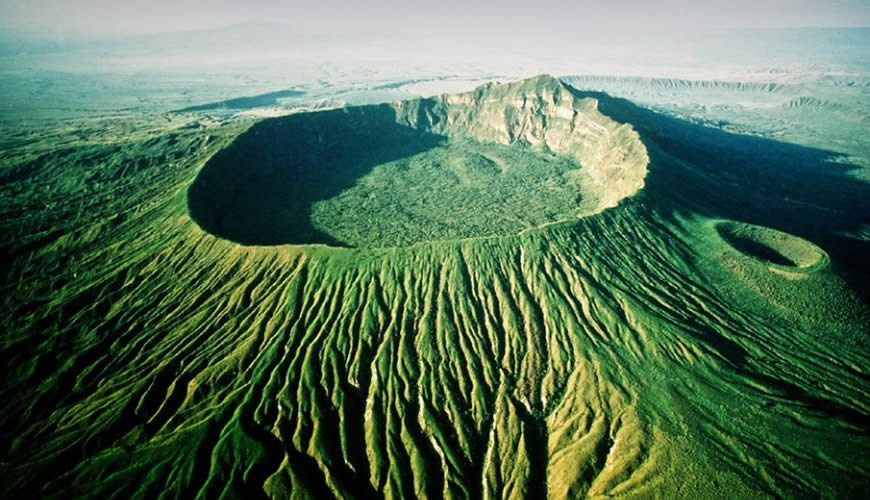
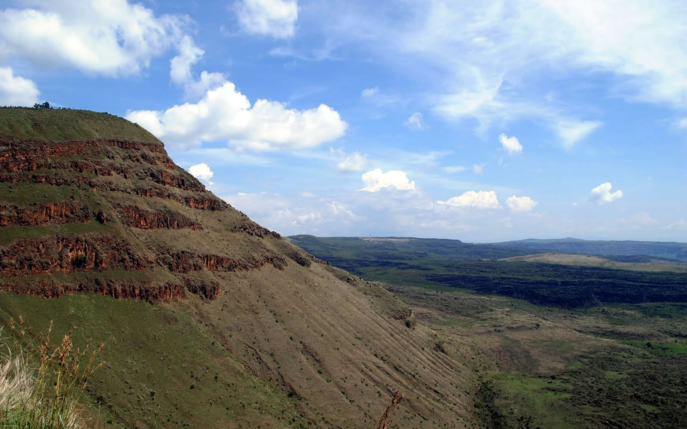
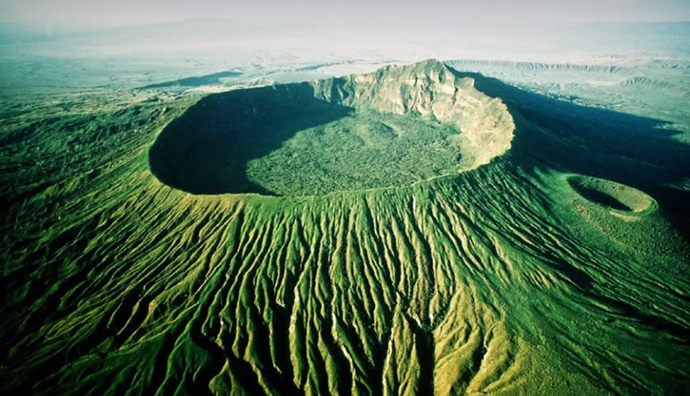
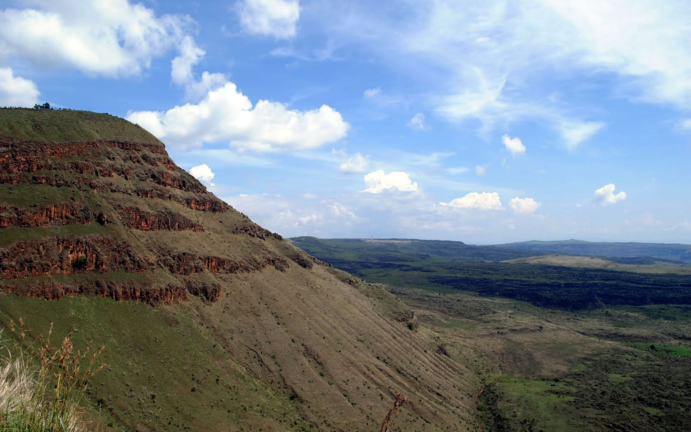
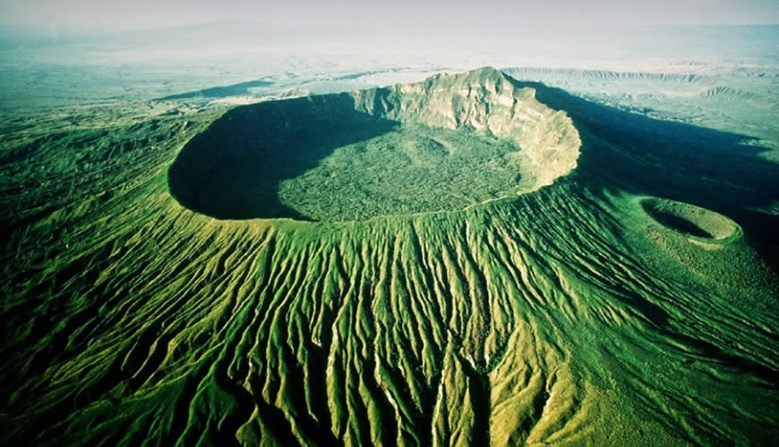
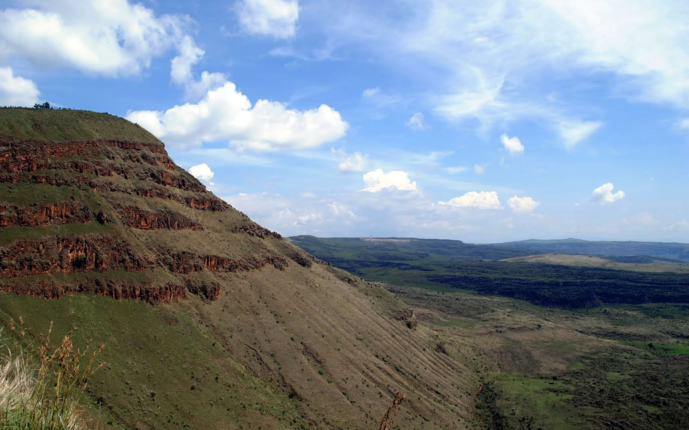

Welcome to our hiking adventure! Hiking is a wonderfulway to connect with nature, stay active and enjoy breathtaking views and connect with new people .Whether you're familiar with hiking or new to this there is a chance for everyone.
Explore lush forests, conquer challenging peaks, and experience the joy of reaching the summit. Hiking is not just a physical activity; it's a chance to clear your mind, breathe in fresh air, and escape the hustle and bustle of daily life.


Wear comfortable and sturdy hiking boots.
Stay hydrated by carrying an adequate water supply.
Check the weather forecast before heading out.
Pack essential items like a map, compass, and first aid kit.
Grab your hiking boots, pack a backpack, and embark on a journey filled with serenity and excitement. Check out our favorite trails and get ready for an unforgettable hiking experience!
Written by Victoria Mumo.